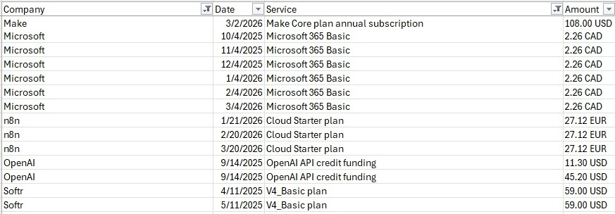

The other day my accountant asked for financial records. That surprises me every year. And I scramble. Not that I don't have the records. I do. In about 30+ different places.
Bank is easy. Put in fiscal year and download all records in one csv file. Not sure why the accountant still wants the pdf for bank statements. csv is so much easier.
For expenses there are the credit card statements (csv). Unfortunately they only allow the last 4 months.
Most of my credit card purchases and subscriptions also have email records. Time for Claude Cowork. So I let Cowork loose on my billing folder. Create one record for each email.4 columns: Company, service, date and amount.

So I get the file. Very nice. 3 different currencies: CAD, USD, EURO. Not so good. (You probably don't have the currency issue in the US 😊) Some invoices do not have the currency, which makes them either CAD or USD. Claude guessed right. We add a conversion factor and I have my expense file with most of my business expenses and a few personal ones that I can easily filter out.